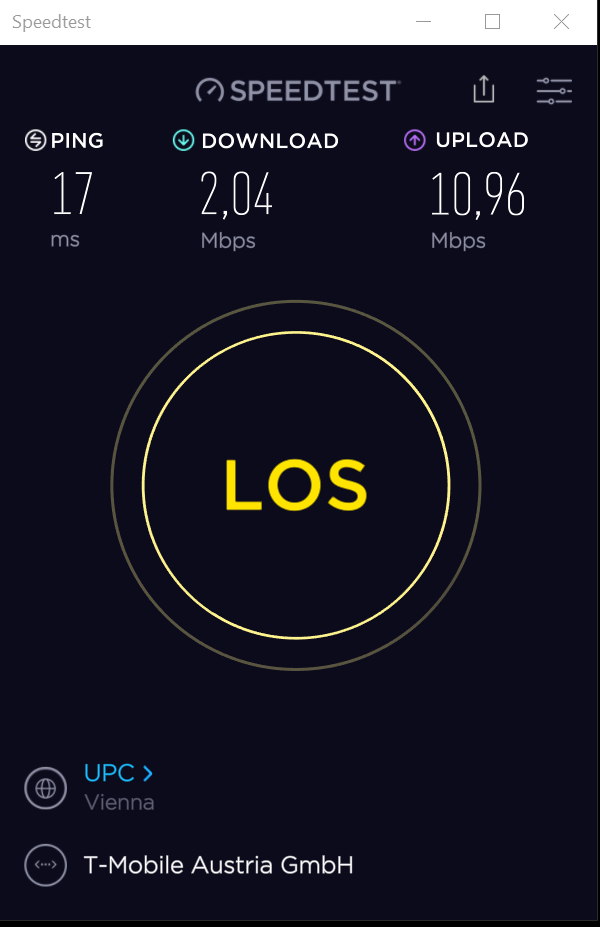

hallo,ich habe jetzt seit ca n halben Jahr das Homenet unlimited turbo 50mbit max,hat auch anfangs alles super geklappt,hatte immer fast max geschwindigkeit mit LTE,wurde danach aber immer langsamer,und jetzt wenns gut geht bekomm ich grad noch 8 mbits rein mit LTE und ja hab schon mehrmals serviceline angerufen,standort geändert,und was halts sonst noch so alles geraten wird,hat nix gebracht,und laut Technikhotline konnte auch keine Störung gefunden werden,selbst wenn ichs auf 3G umschalte bekomm ich grad mal and die 10+ rein,für mich klingt das danach das hier schwerwiegende Technische probleme vorliegen,den von meiner seite lief alles gut,bis es halt dann immer schlechter wurde,Router is neu auch simkarte,also ich weis nicht weiter,hab auch keine lust immer die Technikhotline anzurufen,die ja nicht grade billig ist,und ich bin nicht der einzige der das Problem hier hat,viele leute die ich kenne,haben das gleiche Problem wie ich.
Ja LTE ist halt ein shared Medium aber das wissen wir eh...
Aber interessant wäre zu wissen, ob du auch in der Früh keine besseren Werte schaffst.
Am Abend im Herbst sind immer mehr Menschen im Internet und da gibt es deutlich mehr Auslastung als eben im Sommer.
Aber sollte bei dir auch in der Früh nicht mehr gehen, liegt das Problem woanders.
Sag uns doch bitte mal Bescheid, wie das über den Tag verteilt aussieht.
Zeit ist egal,wie ich schon sagte,maximum is 8mbit bei LTE,und das schon monate lang...
volle signalstärke LTE und nette 2mbits down ist doch n witz.... 
{kind=link}